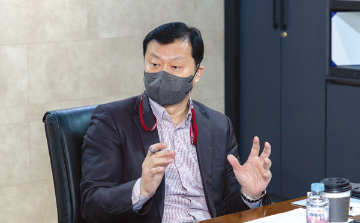

지방공기업은 매년 평가를 받는다. 다년간의 평가 경험을 보면 지방공공기관별로 평가에 대비하는 체계적인 전략이 있고 이에 따라 준비하는 공공기관과 그렇지 못한 공공기관이 상대적으로 차이가 나타났다. 지금까지의 경험을 통해 성공적인 평가를 위해 지방공기업들이 준비해야 할 요소는 무엇인지 살펴보고자 한다.
지방공기업 평가의 목적
지방공기업의 경영평가를 통해서 달성하고자 하는 목적은 정부와 지방공기업이 약간 다르다. 정부는 지방공기업을 통해 달성한 수익성과 공익성의 가치를 평가하고자 한다. 지방공기업은 공기업의 미션 비전을 실현했음을 보여주고 정당하고 추가적인 보상을 얻고자 한다.
이러한 평가의 목적을 명확하게 아는 것이 성공적인 평가를 하기 위한 시작점이다. 평가의 기본인 이 목적을 잊게 되면 아무리 열심히 준비한다 해도 좋은 평가를 받기는 어렵다. 올해 평가에서 몇몇 기관들은 사회적 가치를 너무 강조한 나머지 수익성과 관련된 목표를 중장기 미션・비전에서 조차 빼버린 기관도 있었다는 것에는 아쉬움이 컸다. 지금은 오히려 코로나19 시기에 미흡했던 수익성 부문을 어떻게 회복할 것인가를 준비하는 시기라고 판단된다. 공공기관의 차원에서 평가는 이렇듯 미션 비전을 달성할 수 있는 지름길을 제시하기도 하며, 구성원들이 미션 비전을 위한 공감대를 만들게 하기도 한다. 또한 우수한 공기업의 편익을 통해 사회적인 보상과 경제적인 보상을 받을 수도 있다. 그리고 무엇보다도 평가 미비점을 보완하기 위한 정보를 제공받을 수 있다. 그러한 정보는 무엇이 문제이고, 어떤 대안이 있을 수 있는지에 대한 정보다.
다음은 지방공기업이 성공적인 평가를 위해 준비해야 할 전략을 환경 관리, 문제 정의, 목표 설정, 대안 개발 순으로 간략하게 제시해본다.
성공적인 평가를 위한 환경 관리
성공적인 평가를 위해서는 평가에 우호적인 환경을 만드는 것이 매우 중요하다. 환경에 순응하는 것에 그치면 안 된다. 환경을 적극적으로 관리하는 것이 필요하다. 맹자의 엄마는 자식에게 우호적인 환경을 만들어주기 위해 환경을 세 번이나 바꾼다. 적극적으로…….
자전거를 타고 목적지로 이동할 때 바람이 뒤에서 부는 경우와 앞에서 부는 경우를 경험에 보면 환경의 도움이 얼마나 다른 결과를 초래하는지 쉽게 알 수 있다. 자전거의 진행 방향과 다른 역방향의 바람인 경우에 아주 쎈 바람인 경우에는 시속 10km로 달리기도 어렵다. 순방향인 경우에는 시속 30km 속도를 수월하게 낼 수도 있다.
이처럼 어떻게 하면 평가에 유리한 환경을 만들 수 있는지 고려해야 한다. 우선 우호적인 환경을 만들기 위해서는 조직 외부에서 지자체, 지방의회, 지역 내의 관련 단체, 지역 사회에서의 지지가 필요하다.
다음으로 조직 구성원도 내부 환경으로 매우 중요하다. 조직 구성원이 평가의 목적에 동의하고 적극적으로 평가에 임할 수 있는 의욕이 있어야 한다. 조직 구성원은 평가의 참여자이기도 하고 환경이기도 하다. 조직의 구성원 사이에 평가에 적극적으로 참여하고, 평가를 통해 기관의 미션 비전을 달성할 수 있다는 확신 분위기를 확산하는 것이 중요하다.
서울시 ○○시설관리공단의 사례는 환경의 지지가 얼마나 중요한가를 보여주었다. 이사장 인터뷰에 구청장이 동반하여 인터뷰를 한 사례가 있었는데, 그 이후 몇 년간 해당 공단은 질적・양적으로 평가에서 우수한 변화를 보여주었다. 환경을 적극적으로 관리해야 하는 이유다.
성공적인 평가를 위한 정확한 문제 정의
문제에 답이 있다. 정확하게 문제를 정의하지 않으면 문제를 해결할 수 없다. 다음의 사례를 생각해보자.
‘서울의 사당동에서 부산을 가야 한다면 어떻게 해야 합니까?’라는 문제가 주어진다면 많은 사람이 서울의 사당동이니 서울역이나 영등포역으로 가서 기차를 타야 한다고 답할 것이다. 그러나 ‘서울의 어느 역을 가야 합니까?’라는 문제가 아니기 때문에 답은 광명역이나 수원역으로 이동하는 것이 정답이다.
문제를 잘못 정의하면 문제를 열심히 풀어도 바른 답을 낼 수 없다. 이를 3종 오류라고 한다. 3종 오류를 범하지 않기 위해서는 문제를 정확하게 정의해야 한다. 평가보고서의 작성은 문제에 대해 지방공기업이 답을 제시하는 과정이다. 이러한 과정에서 문제를 정확하게 정의하지 못 한다면 아무리 열심히 평가를 준비해도 100% 실패하는 3종 오류를 범하게 된다. 몇몇 평가 사례를 중심으로 정확하게 문제를 정의하는 것의 중요성을 확인할 수 있다.
지속가능경영의 경우는 ‘혁신 집행의 적정성’ 항목을 평가한다. 편람에 따르면 혁신 집행의 적정성이란 자율 혁신 과제 추진 시에 유관기관 및 내부 구성원과의 협업 등 다양한 자원의 효율적인 연계・협력을 통해 추진한 과정 및 노력을 의미한다고 정의하고 있다. 이 정의에 따르면 유관기관과의 협업과 내부 구성원 간의 협업을 모두 포함하고 있다.
따라서 유관기관과의 협업, 내부 구성원과의 협업이 모두 활발해야 좋은 평가를 받을 수 있다. 그러나 보고서에 이 두 가지 협업중에서 협업 하나만을 담는다면 성공적인 평가를 받는 데 제약이 있을 수 있다.
‘타 기관에 대한 자발적인 전파 홍보 노력’의 평가 항목이 있다면 타 기관이 무엇인지를 정의해야 한다. 타 기관은 유사한 지방공기업일 수도 있고, 또한 지역 내의 기관일 수도 있다. 이를 위해서는 우선 편람을 적극적으로 활용하는 것이 필요하다. 편람에 문제와 답이 있다고 보아도 무방하다. 그리고 다른 기관의 보고서를 적극적으로 검토해서 특정 항목의 문제 정의가 우리 공기업과 어떻게 달랐는지를 찾아낼 수 있다.
다음으로 지난해 평가 결과에서 미흡한 분야와 개선 분야를 추출하는 것이 필요하다. 타깃인 공기업을 선정하고, 해당 공기업과 우리 공기업의 차이를 문제로 정의하는 작업이 선행되어야 한다. 이전 연도의 평가 결과를 활용하여 문제 정의가 무엇이 잘못됐는지 그에 대한 실수를 찾아내는 것도 중요하다.
성공적인 평가를 위한 구체적인 목표 설정
문제를 정확하게 정의했다면 정확하고 구체적인 목표를 설정할 수 있다. 구체적인 목표가 목표의 달성 가능성을 높인다. 지방공기업에서는 다양한 구성원이 참여한다. 이러한 구성원이 한 방향으로 문제 해결과 목표 달성의 노력을 경주하고자 한다면 구체적인 목표를 제시할수록 달성할 수 있는 가능성이 높아진다. 그런데 구체적인 목표는 구체적인 문제 정의로부터 나온다는 점에서 문제 정의의 중요성을 다시 한 번 강조하고자 한다.
성공적인 평가 준비의 목표도 일반적으로 바람직한 목표의 조건으로 이야기되는 ‘SMART’1)의 기준을 활용하면 쉽게 설정할 수 있다. 목표는 구체적이어야 하며(specific), 측정할 수 있어야 하고(measurable), 달성할 수 있어야 하며(achievable), 현실에 적용할 수 있어야 하고(relevant), 시간과 관련시켜야(timed) 한다.
목표 설정을 위한 SMART 원칙
첫째, Specific-목표는 구체적이어야 한다.
정확히 무엇을 달성하려는가를 알아야 한다. 결과가 애매모호하거나 가볍고 일상적인 업무를 목표로 삼아서는 안 된다. 애매모호한 목표를 세운다면 궁극적으로 목표를 달성하기 어렵다. 구체적인 목표가 없는 사람은 자신이 어떤 일을 해야 할지, 또 어떻게 해야 할지 모른다. 그러기에 기대되는 목표 달성의 결과가 구체적이고 명확해야 한다.
둘째, Measurable-측정가능한 것이어야 한다.
목표 달성 정도를 정량적 또는 정성적으로 측정할 수 있어야 한다. 목표 달성 정도를 최대한 객관적으로 이해하고 판단할 수 있도록 표현해야 한다. 만일 정성적 지표를 선택했다면 평가자와 피평가자가 측정 기준에 대해 충분히 이해하고 합의할 수 있어야 한다.
셋째, Action oriented-실천적이어야 한다.
목표를 설정할 때 활동을 나타내는 명사 또는 동사를 사용한다. 예를 들어 증가, 감소, 완성, 설계 등으로 사용한다. 활동으로 표현된 목표는 목표 달성을 위한 방안을 구체적으로 설정할 수 있으며 달성 여부를 측정하기도 쉽다.
넷째, Realistic-현실적이어야 한다.
해당 상황에서 가능한 일인가를 측정해야 한다. 설정된 목표가 가능한 것처럼 생각되어야 구성원들이 노력을 하려는 성취 동기를 유발할 수 있다. 목표는 자신의 현재 수준보다 높고 도전적으로 설정하되 자신의 노력에 비해 달성할 수 있는 수준이어야 한다. 비현실적으로 높게 설정되거나 통제가 불가능한 외부 요인에 의해 목표 달성도가 좌우되는 경우에는 동기부여 자체가 어렵다.
다섯째, Timely-시간 설정을 해야 한다.
언제까지 목표를 달성할 것인지 구체적인 기한을 설정해야 한다. 그 기한이 일년 이상인 경우는 해당 성과기간 동안 달성한 중간 목표를 세우고 그 중간 목표가 시간 설정의 기준이 되는 것이다.
[그림 1] 목표 설정을 위한 SMART 원칙

성공적인 평가를 위한 대안 개발
평가를 위해 목표를 설정했다면 목표를 달성할 수 있는 대안을 개발하는 것이 필요하다. 대안을 개발하는 것은 단순한 벤치마킹 이상의 문제다. 벤치마킹은 다른 공기업과의 비교를 수반하게 되는데, 먼저 비교하지 않으면 비교 당하게 된다.
어떻게 하면 평가를 활용해서 성공적으로 벤치마킹할 수 있는지를 살펴보자. 우선 평가를 통해 각 지방공기업은 어떤 평가 분야에 취약했는지를 파악해야 한다. 다음은 우리 공기업이 취약한 분야에서 우수한 평가를 받은 공기업을 찾아 벤치마킹할 대상을 선정하는 데 평가를 활용할 수 있다. 우수한 공기업의 평가보고서를 활용하면 벤치마킨 대상에 대한 기초 조사를 쉽게 진행할 수 있다. 미진한 정보는 벤치마킹한 지방공기업의 지원을 통해 확보할 수 있는데, 이 또한 우수한 평가를 위해 우호적으로 지원해주기 때문에 적극적으로 활용해야 한다.
지금까지 성공적인 평가를 위한 준비로서 4단계를 살펴보았다. 중요도를 따져 본다면 환경 관리와 문제 정의가 무엇보다 중요하다. 평가에 우호적인 조직 내외부의 환경을 조성하고, 전년도 평가에서의 문제 정의, 새로운 평가 편람에서의 문제 정의에 유의한다면 시작이 반이므로 절반 이상의 성공을 보장한다고 볼 수 있다. 앞선 2단계의 성공에 우선적으로 집중해야 한다.
1)
SMART 목표 관리 기법은 피터 드러커의 MBO(Management by Object, 목표 관리)에서 목표의 타당성을 확인하기 위해 제시된 방법이다. MBO가 1954년에 발표된 그의 저서인 ‘경영의 실제’에서 처음으로 언급된 이후에 Robert S. Ruben 교수가 확장한 개념이다.